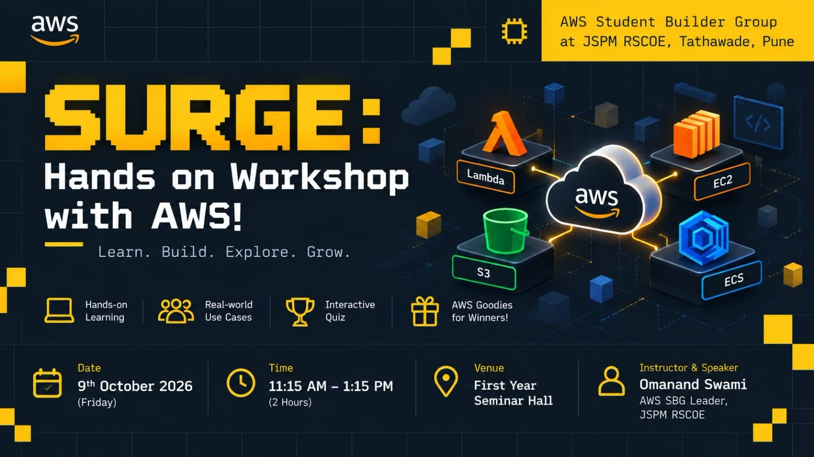
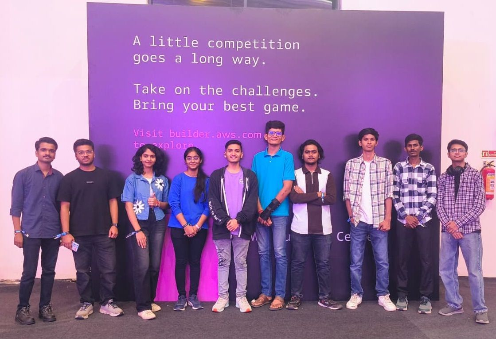
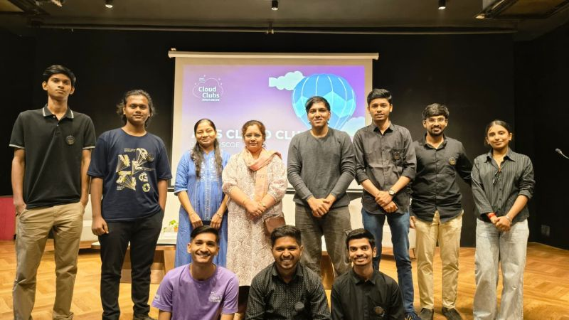
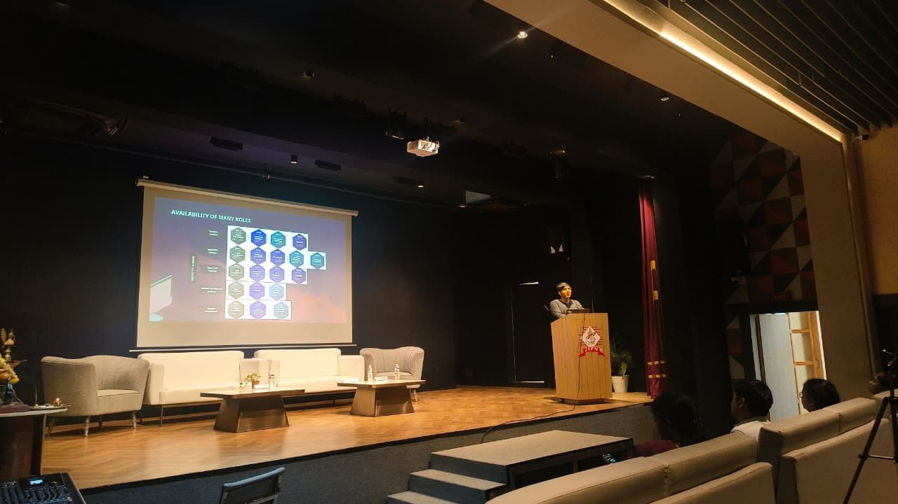

Learn
Explore AWS, cloud concepts and modern technologies.
START WITH CURIOSITY ↗AWS STUDENT BUILDER GROUP
AWS Student Builder Group at JSPM RSCOE is a student-led community focused on learning cloud technologies, building practical projects and creating opportunities for students to explore AWS through hands-on experiences.
JSPM's Rajarshi Shahu College of Engineering
A COMMUNITY THAT BUILDS
We are a student community exploring cloud computing, AWS and emerging technologies through workshops, projects, events and collaborative learning.
Explore AWS, cloud concepts and modern technologies.
START WITH CURIOSITY ↗Turn ideas into practical projects through hands-on experience.
MAKE IT REAL ↗Learn with peers, participate in events and build your technical journey.
GROW TOGETHER ↗FROM FIRST STEPS TO BIG IDEAS
Make space to experiment, share what you learn and take the next step with fellow builders.
Hands-on sessions that turn cloud concepts into practical skills.
↗Build and experiment with applications using AWS.
↗Talks, challenges and community-driven technology sessions.
↗Learn, build and exchange ideas with fellow student builders.
↗FEATURED WORKSHOP / 2026
A hands-on AWS workshop where students learn how websites work and deploy applications using different AWS services.

THE CLOUD TOOLKIT
Start with the building blocks behind the SURGE deployment workshop.
Store and serve static website files.
Run applications on a virtual server.
Run and manage containerized applications.
Run code without managing servers.
MOMENTS FROM OUR COMMUNITY
A look at our workshops, sessions and community moments.



THE BEST PART IS BUILDING TOGETHER
Every workshop, session and project is an opportunity to learn something new, build together and grow as a community.
See our community moments →YOUR NEXT BUILD STARTS HERE
Join AWS Student Builder Group and start learning, building and exploring with fellow student builders.